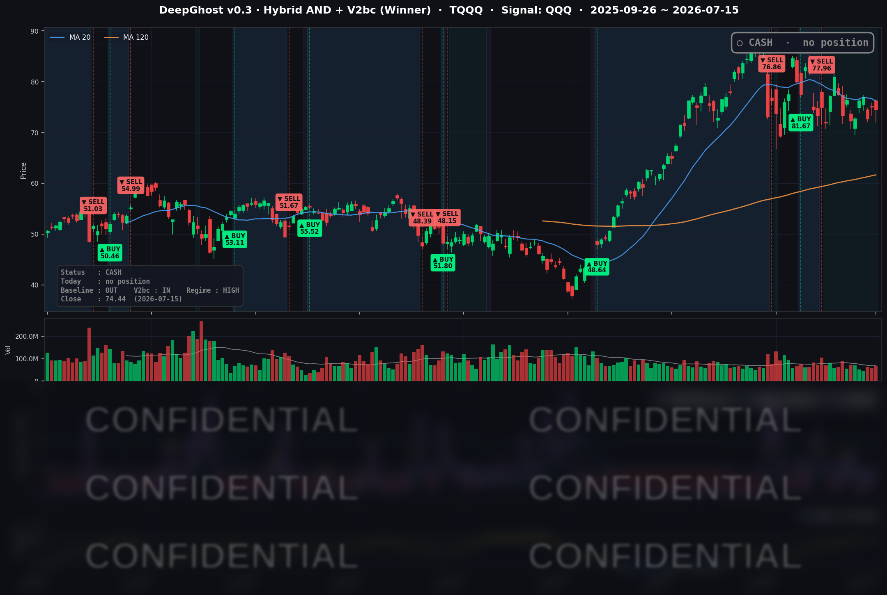

👻 매일 시그널과 히스토리를 홈페이지에서 한눈에 → www.ghostai.co.kr
6월 물가 둔화와 금리 안정으로 시장 전체가 반등했지만, 반도체 급락으로 QQQ만 홀로 내렸습니다. 돈은 반도체에서 애플·아마존·MS 같은 대형 기술주로 옮겨 가는 중입니다. 이 추세가 지속될지 지켜봐야할 것입니다. 운영진만 관찰하는 커러비리 종목 13개 모든 시그널을 보면, 얼마전 대형 기술주의 매수 시그널이 대거 나왔었습니다. 그때 좀 의아했었는데 시장 트렌드가 바뀌는 초입에 모델이 이 현상을 읽은 것으로 보입니다. (모든 종목 시그널은 향후 프리미엄 서비스를 통하여 공개 예정입니다.)
📊 오늘의 매매 신호
| 항목 | 내용 |
|---|---|
| 오늘 할 일 | ✅ 아무것도 안 해도 됩니다 |
| 포지션 상태 | 💵 현금 보유 중 (OUT OF POSITION) |
| 현금 보유 기간 | 2026-06-25 ~ 2026-07-15 (21일) |
| TQQQ 종가 | $74.44 (-0.77%) |
지난 6/25 매도 이후 전략은 계속 현금 상태를 유지하고 있습니다. 이날은 반도체 급락으로 QQQ가 홀로 밀리면서, 전략의 시장 국면 필터가 "변동성이 큰 잡음 구간"을 감지해 신규 매수를 걸러내었습니다.
TQQQ 시그널 — OUT OF POSITION
현재 상태: 현금 보유 중 | 6/25 매도 이후 관망 지속

오늘 미국 시장 — 시황 요약
6월 소비자물가(CPI)가 예상보다 크게 식으면서 시장은 넓게 반등했습니다. S&P 500, 다우, 러셀 2000이 모두 +0.3-0.4% 올랐고, 나스닥 종합도 +0.62% 상승했습니다. 그런데 QQQ만 유일하게 -0.27% 내렸습니다. 이유는 하나입니다. QQQ에서 비중이 큰 반도체가 무너졌기 때문입니다. 마이크론(MU)이 -8%, 인텔(INTC)이 -4% 넘게 빠지며 지수를 홀로 끌어내렸습니다. 빠져나온 자금은 애플·알파벳·메타·아마존·MS 같은 대형 기술·서비스주로 옮겨갔습니다. "폭은 넓었지만 주도주가 반도체에서 대형 소프트웨어로 바뀐" 순환 장세였습니다.
지수 마감
| 지수 | 종가 | 등락률 |
|---|---|---|
| S&P 500 | 7,572.40 | +0.38% |
| 나스닥 종합 | 26,269.23 | +0.62% |
| 다우존스 | 52,658.64 | +0.29% |
| 러셀 2000 | 2,976.26 | +0.39% |
지수 대부분이 골고루 올랐지만, QQQ(-0.27%)와 TQQQ(-0.77%)는 반도체 부진에 눌려 하락했습니다. 나스닥 종합은 올랐는데 QQQ는 내린 이 괴리가 오늘 시장을 이해하는 열쇠입니다. QQQ는 대형주 100개에 집중돼 있어, 그 안에서 비중 큰 반도체가 급락하면 지수가 통째로 눌립니다.
국채 금리 동향
| 만기 | 수익률 | 전일 대비 |
|---|---|---|
| 3개월 (^IRX) | 3.688% | -1.2bp |
| 5년 (^FVX) | 4.255% | -6.6bp |
| 10년 (^TNX) | 4.545% | -4.0bp |
| 30년 (^TYX) | 5.083% | -1.1bp |
물가 둔화에 반응해 금리는 전 구간에서 내렸습니다. 특히 중기물인 5년물(-6.6bp)의 하락폭이 가장 컸는데, "임박한 추가 긴축" 베팅이 되돌려지고 있음을 보여줍니다. 10년물에서 3개월물을 뺀 장단기 스프레드는 +85.7bp로 곡선은 정상(우상향)을 유지했고, 역전은 없습니다. 다만 30년물은 여전히 5%를 넘고(5.083%) 10년물도 4.55% 수준이어서, 밸류에이션이 높은 성장·반도체주에는 여전히 부담이 남아 있습니다.
연준 발언 & 금리 패스
케빈 워시 연준 의장은 하원 증언에서 이번 물가 둔화를 긍정하면서도 "한 개의 데이터일 뿐이며, '임무 완수(mission accomplished)'는 아니다"라고 선을 그었습니다. "물가는 여전히 너무 높고, 2%를 웃도는 인플레이션에 안주할 것이라 기대한다면 실망할 것"이라며 조기 완화 기대를 견제했습니다. 시장은 7월 회의 동결(정책금리 3.50~3.75% 유지)을 사실상 확정으로 봅니다. 6월 물가 둔화로 9월 인상 시나리오는 이번 주 다소 후퇴했지만, 워시 의장의 매파적 어조는 "완화 사이클은 아직 이르다"는 신호를 재확인했습니다.
오늘의 핵심 이슈
- 6월 물가의 서프라이즈 하락 — 헤드라인 CPI가 연율 3.5%로 예상(3.8%)을 크게 밑돌았고, 근원 물가도 2.6%로 예상(2.9%)을 하회했습니다. "물가 정점은 지났다"는 안도감이 지수와 채권을 동반 강세로 이끌었습니다.
- 중국 메모리 경쟁 우려로 반도체 급락 — 마이크론(MU)은 실적이 강했음에도 중국 메모리 업체(CXMT)의 D램·낸드 경쟁 심화 우려로 -8% 급락했습니다. 이 매도세가 인텔(-4.43%) 등 반도체 전반으로 번지며 섹터를 끌어내렸습니다.
- 대형 소프트웨어·서비스로의 자금 회전, 애플 사상 최고가 — 반도체에서 빠진 돈이 애플(+4.01%)·알파벳(+3.17%)·메타(+3.07%)·아마존(+3.02%)·MS(+2.78%)로 옮겨갔습니다. 애플은 중국 내 애플 인텔리전스 승인과 알리바바 Qwen AI 연동 소식에 장중 사상 최고가를 기록했습니다.
변동성 & 투자심리
VIX는 16.50에서 15.67로 -5% 내리며 낮은 변동성 국면을 확인했습니다. 15 중반은 안정 구간입니다. 반면 CNN 공포탐욕 지수는 약 43~46으로 "공포와 중립의 경계"에 머물렀습니다. 지수는 반등했지만 투자심리는 아직 완전히 낙관으로 돌아서지 않았다는 뜻입니다. 반도체 균열과 워시 의장의 매파 발언이 낙관을 제한하는 모습입니다.
매크로 & 원자재
- WTI $80.19 (+1.07%), 브렌트 $85.38 (+0.77%)
- 금 $4,062.70 (+0.04%)
원유는 소폭 반등했고, 금은 사실상 보합이었습니다. 물가가 식고 금리가 내렸는데도 안전자산인 금이 뚜렷한 방향을 잡지 못한 점은, 시장이 아직 방향을 확신하지 못하는 신중한 분위기를 반영합니다.
주요 종목 동향
| 종목 | 전일 종가 | 당일 종가 | 등락률 | 비고 |
|---|---|---|---|---|
| AAPL | 314.86 | 327.50 | +4.01% | 중국 애플 인텔리전스 승인, 알리바바 Qwen 연동, 장중 사상 최고가 |
| GOOGL | 359.51 | 370.92 | +3.17% | 대형 서비스주 회전 수혜 |
| META | 661.04 | 681.31 | +3.07% | 대형 서비스주 회전 수혜 |
| AMZN | 247.49 | 254.96 | +3.02% | 대형 서비스주 회전 수혜 |
| MSFT | 384.93 | 395.63 | +2.78% | 대형 소프트웨어 회전 수혜, 금리 하락 우호 |
| AVGO | 389.11 | 394.28 | +1.33% | 메모리 매도 속 반도체 중 상대적 선방 |
| NVDA | 211.80 | 212.50 | +0.33% | AI 대표주지만 반도체 약세 여파로 상승폭 제한 |
| NFLX | 73.53 | 73.68 | +0.20% | 보합권 |
| QCOM | 178.10 | 177.98 | -0.07% | 보합권, 반도체 약세에 소폭 눌림 |
| TSLA | 396.18 | 394.46 | -0.43% | 소폭 하락, 대형주 랠리에서 소외 |
| INTC | 107.76 | 102.99 | -4.43% | 중국 메모리 경쟁 전이, $100 지지선 위협 |
| MU | 983.12 | 904.28 | -8.02% | 강한 실적에도 중국 경쟁·고밸류 우려로 급락, 섹터 하락 주범 |
반도체 안에서도 결이 갈렸습니다. 메모리(MU)와 로직(INTC)이 무너진 반면, AI 대표주 엔비디아(NVDA)와 AVGO는 소폭이나마 버텼습니다. 메모리 축과 AI 로직 축이 서로 다르게 움직인 하루였습니다.
Ghost.AI — Quantitative AI Investment
Model: DeepGhost v0.3 | Transformer-Based Deep Learning
Coverage: 13 tickers | Updated every trading day after US market close
⚠️ 본 자료는 정보 제공 목적으로만 작성되었으며 투자 권유가 아닙니다. 모든 투자의 책임은 투자자 본인에게 있습니다. 과거 성과가 미래 수익을 보장하지 않습니다.
[유의사항]
- 본 서비스는 불특정 다수를 대상으로 발행되는 단방향 정보 제공 서비스이며, 투자자 개인의 재산 상황·투자 목적·위험 선호도를 반영한 개별 투자 조언이 아닙니다.
- 고스트에이아이 주식회사는 고객과 쌍방향 의사소통(개별 상담, 맞춤형 자문 등)을 제공하지 않습니다.
- 본 콘텐츠는 투자 권유 또는 매매 주문의 청약·청약의 권유에 해당하지 않으며, 최종 투자 판단 및 그에 따른 손익의 책임은 전적으로 투자자 본인에게 있습니다.
고스트에이아이 주식회사